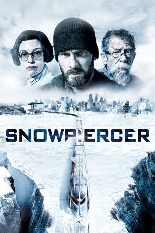
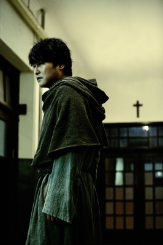
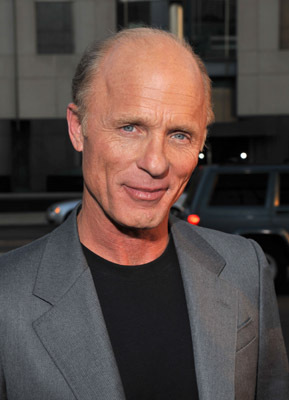
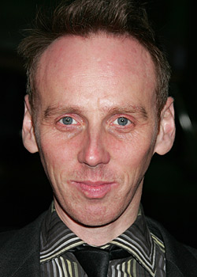
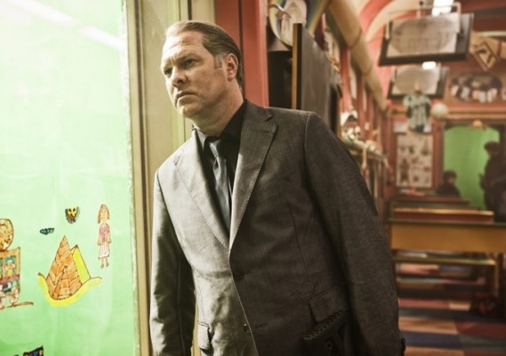
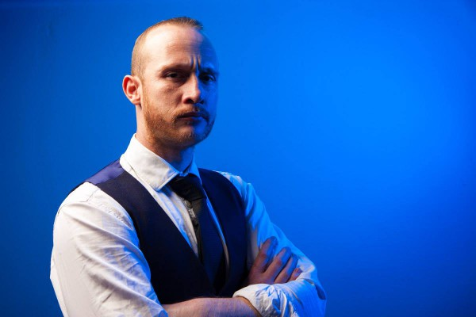
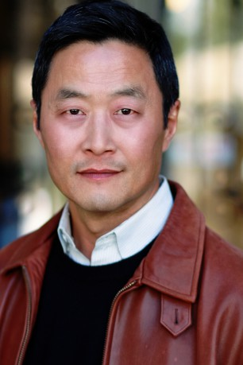

#738 Snowpiercer
 
 IMDB-Wertung: 7.1 / 10
IMDB-Wertung: 7.1 / 10  Metascore: 84
Metascore: 84 
Die Welt im Jahr 2031: Ein Versuch, die globale Erwärmung zu stoppen, ist katastrophal fehlgeschlagen und hat stattdessen die Erde in eine neue Eiszeit gestürzt. Nahezu alles Leben ist ausgelöscht und unter Eismassen begraben. Die wenigen verbliebenen Menschen fristen ein Dasein in ständiger Bewegung: Sie sitzen auf dem Snowpiercer fest, einem gewaltigen Zug, der durch eine ‘heilige’ Maschine gleich einem Perpetuum mobile ununterbrochen angetrieben wird.\r Die Insassen der Waggons leben in einer Mikrogesellschaft mit striktem Kastensystem. Die bewohner der letzten Waggons gehören der niedrigsten Kaste an und werden dementsprechend von den oberen Kasten unterdrückt und schikaniert. Unter ihrem widerstrebenden Anführer Curtis planen sie den Aufstand gegen den gottgleichen Zugführer Wilford und seine Schergen. Doch wie hoch wird der Preis für die Freiheit sein, wenn das Schicksal der Menschheit von einer sensiblen Maschinerie abhängt?
Jahr: 2013
Dauer: 126 Minuten
FSK: 16
Land: Süd-Korea Studio: MFA FilmdistributionTonspuren: DTS - ,
Untertitel: Deutsch,
Auflösung: 1080p (1920x1040) Größe: 9953 MB
Genre: Action, Drama, Sci-Fi
Regisseur: Joon-ho Bong
Drehbuch: Joon-ho Bong, Kelly Masterson, Joon-ho Bong, Jacques Lob, Benjamin Legrand
Soundtrack: Marco Beltrami
Darsteller:
 Chris Evans als Curtis
Chris Evans als Curtis-  Kang-ho Song als Namgoong Minsoo
-  Ed Harris als Wilford
 John Hurt als Gilliam
John Hurt als Gilliam Tilda Swinton als Mason
Tilda Swinton als Mason- Jamie Bell als Edgar
- Octavia Spencer als Tanya
-  Ewen Bremner als Andrew
- Ah-sung Ko als Yona
- Alison Pill als Teacher
- Luke Pasqualino als Grey
-  Vlad Ivanov als Franco the Elder
- Adnan Haskovic als Franco the Younger
 Clark Middleton als Painter
Clark Middleton als Painter- Marcanthonee Reis als Tim
- Tómas Lemarquis als Egg-Head
- Kenny Doughty als News Reporter
-  Jim High als Soldier 1
- Peter Hallin als Soldier 2
- Sean Connor Renwick als Sergio
- Brian Colin Foley als Soldier A
- Kendrick Ong als Soldier B
- Jonny Loquasto als Voice Actor
- Parry Shen als Voice Actor
- Joseph Bertót als Voice Actor
- Emma Levie als Claude
-  Steve Park als Fuyu
- Paul Lazar als Paul
- Robert Russell als Gerald
- Magda Weigertová als Doris
- Haruna Honcoop als Female Officer
- Ana Braun als Ylfa
- Griffin Seymour als Boy
- Tyler John Williams als Young Wilford
- Luna Sophia Bar-Cohen als Magdalena
- Karel Vesely als Andy
- Sung-taek Park als Chan
- Seisuke Tsukahara als Old Man
- Tomás Dianiska als Dark Voice
- Miroslav Navratil als Giant
- Hun Chang als Plant Tender 1
- Lucie Burianová als Plant Tender 2
- Dana Green als Voice Actor
- Eun-kyung Song als Korean Translator
- Igor Juric als Dark Figure , uncredited
Datei: X:\2013(N-Z)\Snowpiercer (2013, FSK16, 1920x1040).mkv seit 17.03.2015
Festplatte: HD 2013(I-Z)-2014(A-Z)
 Es gibt insgesamt 133 Filme in der Gruppe '2013(N-Z)'
Es gibt insgesamt 133 Filme in der Gruppe '2013(N-Z)'